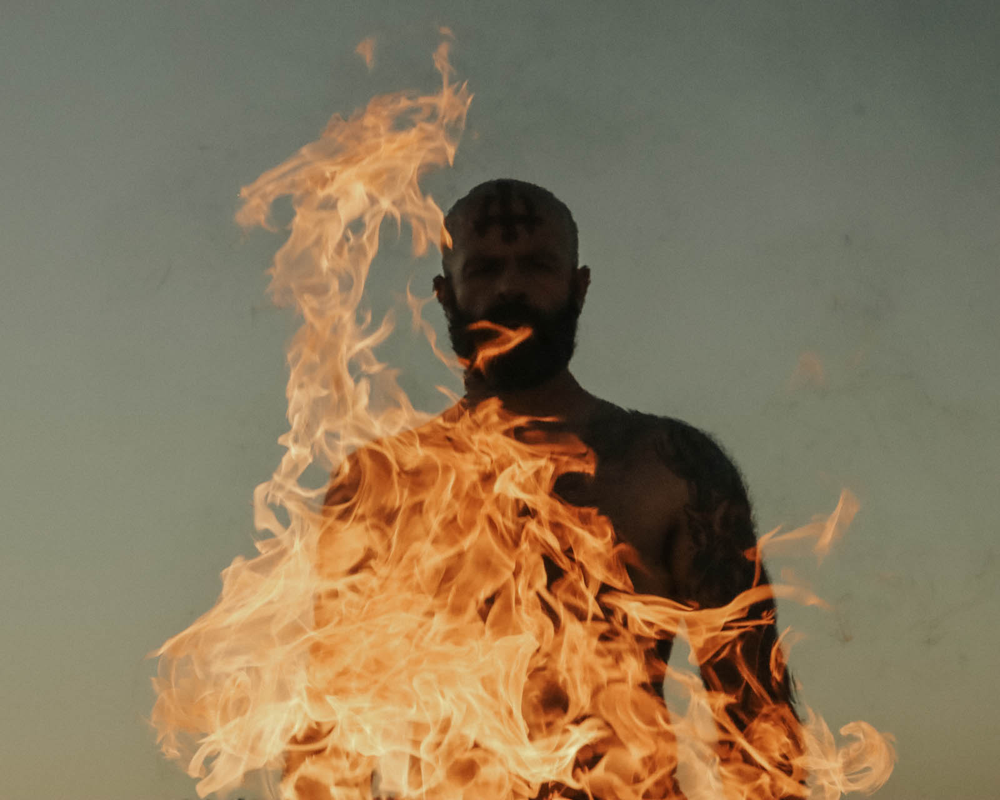

Agni
The name given to the fire,
as men did more than 3,000 years ago.
as men did more than 3,000 years ago.
IVThe Rite
What do Solar Idealists do?
Solar Idealism revolves around the Fire Ritual, a rite that brings us together and perennially re-orients us toward our highest ideals.
Solar Idealists — the First Men — build a fire at dusk as a small, man-made sun to ward off the dusk. They set the fire in mythic time and name the fire “Agni,” as men did more than 3,000 years ago. We maintain the fire through the night, and only allow it to extinguish when the true Sun returns.